六、红外吸收光谱法(193题)
一、选择题 ( 共61题 )
1. 2 分 (1009)
在红外光谱分析中，用 KBr制作为试样池，这是因为： ( )
(1) KBr 晶体在 4000～400cm-1 范围内不会散射红外光
(2) KBr 在 4000～400 cm-1 范围内有良好的红外光吸收特性
(3) KBr 在 4000～400 cm-1 范围内无红外光吸收
(4) 在 4000～400 cm-1 范围内，KBr 对红外无反射
2. 2 分 (1022)
下面给出的是某物质的红外光谱（如图），已知可能为结构Ⅰ、Ⅱ或Ⅲ，试问哪
一结构与光谱是一致的？为什么？ ( )
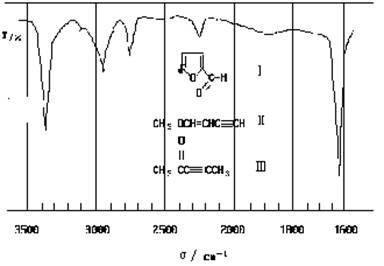
3. 2 分 (1023)
下面给出某物质的部分红外光谱（如图），已知结构Ⅰ、Ⅱ或Ⅲ，试问哪一结构
与光谱是一致的，为什么？
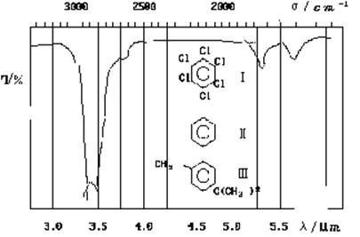
4. 2 分 (1068)
一化合物出现下面的红外吸收谱图，可能具有结构Ⅰ、Ⅱ、Ⅲ或Ⅳ，哪一结构与
光谱最近于一致？
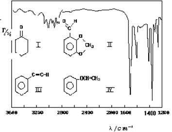
5. 2 分 (1072)
1072
羰基化合物 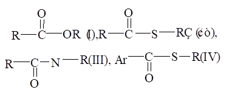
频率出现最低者为 ( )
(1) I (2) II (3) III (4) IV
6. 2 分 (1075)
一种能作为色散型红外光谱仪色散元件的材料为 ( )
(1) 玻璃 (2) 石英 (3) 卤化物晶体 (4) 有机玻璃
7. 2 分 (1088)
并不是所有的分子振动形式其相应的红外谱带都能被观察到，这是因为 ( )
(1) 分子既有振动运动，又有转动运动，太复杂
(2) 分子中有些振动能量是简并的
(3) 因为分子中有 C、H、O 以外的原子存在
(4) 分子某些振动能量相互抵消了
8. 2 分 (1097)
下列四组数据中，哪一组数据所涉及的红外光谱区能够包括 CH3- CH2-CH = O的吸收带 ( )
9. 2 分 (1104)
请回答下列化合物中哪个吸收峰的频率最高？ ( )
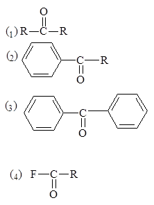
10. 2 分 (1114)
在下列不同溶剂中，测定羧酸的红外光谱时，C＝O 伸缩振动频率出现最高者为( )
(1) 气体 (2) 正构烷烃 (3) 乙醚 (4) 乙醇
11. 2 分 (1179)
水分子有几个红外谱带，波数最高的谱带对应于何种振动 ? ( )
(1) 2 个，不对称伸缩 (2) 4 个，弯曲
(3) 3 个，不对称伸缩 (4) 2 个，对称伸缩
12. 2 分 (1180)
CO2的如下振动中，何种属于非红外活性振动 ? ( )
(1) ← → (2) →← → (3)↑ ↑ (4 )�� ��
O＝C＝O O ＝ C ＝O O ＝ C ＝O O ＝ C ＝ O
↓
13. 2 分 (1181)
苯分子的振动自由度为 ( )
(1) 18 (2) 12 (3) 30 (4) 31
14. 2 分 (1182)
双原子分子在如下转动情况下 (如图)，转动不形成转动自由度的是 ( )
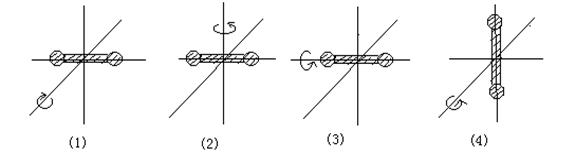
15. 2 分 (1183)
任何两个振动能级间的能量差为 ( )
(1) 1/2 hn (2) 3/2 hn (3) hn (4) 2/3 hn
16. 2 分 (1184)
在以下三种分子式中 C＝C 双键的红外吸收哪一种最强? ( )
(a) CH3- CH = CH2
(b) CH3- CH = CH - CH3（顺式）
(c) CH3- CH = CH - CH3（反式）
(1) a 最强 (2) b 最强 (3) c 最强 (4) 强度相同
17. 2 分 (1206)
在含羰基的分子中，增加羰基的极性会使分子中该键的红外吸收带 ( )
(1) 向高波数方向移动 (2) 向低波数方向移动
(3) 不移动 (4) 稍有振动
18. 2 分 (1234)
以下四种气体不吸收红外光的是 ( )
(1)H2O (2)CO2 (3)HCl (4)N2
19. 2 分 (1678)
某化合物的相对分子质量Mr=72,红外光谱指出,该化合物含羰基,则该化合物可能的
分子式为 ( )
(1) C4H8O (2) C3H4O2 (3) C3H6NO (4) (1)或(2)
20. 2 分 (1679)
红外吸收光谱的产生是由于 ( )
(1) 分子外层电子、振动、转动能级的跃迁
(2) 原子外层电子、振动、转动能级的跃迁
(3) 分子振动-转动能级的跃迁
(4) 分子外层电子的能级跃迁
21. 1 分 (1680)
乙炔分子振动自由度是 ( )
(1) 5 (2) 6 (3) 7 (4) 8
22. 1 分 (1681)
甲烷分子振动自由度是 ( )
(1) 5 (2) 6 (3) 9 (4) 10
23. 1 分 (1682)
Cl2分子基本振动数目为 ( )
(1) 0 (2) 1 (3) 2 (4) 3
24. 2 分 (1683)
Cl2分子在红外光谱图上基频吸收峰的数目为 ( )
(1) 0 (2) 1 (3) 2 (4) 3
25. 2 分 (1684)
红外光谱法试样可以是 ( )
(1) 水溶液 (2) 含游离水 (3) 含结晶水 (4) 不含水
26. 2 分 (1685)
能与气相色谱仪联用的红外光谱仪为 ( )
(1) 色散型红外分光光度计 (2) 双光束红外分光光度计
(3) 傅里叶变换红外分光光度计 (4) 快扫描红外分光光度计
27. 2 分 (1686)
下列化合物在红外光谱图上1675～1500cm-1处有吸收峰的是 ( )
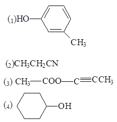
28. 2 分 (1687)
某化合物的红外光谱在3500～3100cm-1处有吸收谱带, 该化合物可能是 ( )
(1) CH3CH2CN
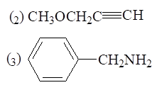
(4) CH3CO-N(CH3)2
29. 2 分 (1688)
试比较同一周期内下列情况的伸缩振动(不考虑费米共振与生成氢键)产生的红
外吸收峰, 频率最小的是 ( )
(1) C-H (2) N-H (3) O-H (4) F-H
30. 2 分 (1689)
已知下列单键伸缩振动中
C-C C-N C-O
键力常数k/(N・cm-1) 4.5 5.8 5.0
吸收峰波长��λ/μm 6 6.46 6.85
问C-C, C-N, C-O键振动能级之差�SE顺序为 ( )
(1) C-C > C-N > C-O (2) C-N > C-O > C-C
(3) C-C > C-O > C-N (4) C-O > C-N > C-C
31. 2 分 (1690)
下列化合物中, C=O伸缩振动频率最高者为 ( )
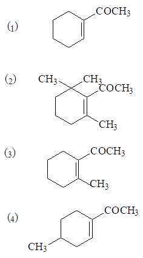
32. 2 分 (1691)
下列化合物中, 在稀溶液里, C=O伸缩振动频率最低者为 ( )
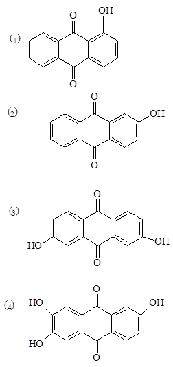
33. 2 分 (1692)
羰基化合物中, C=O伸缩振动频率最高者为 ( )
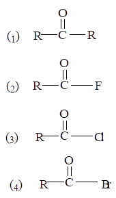
34. 2 分 (1693)
1693
下列的几种醛中, C=O伸缩振动频率哪一个最低? ( )
(1) RCHO
(2) R-CH=CH-CHO
(3) R-CH=CH-CH=CH-CHO
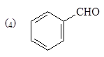
35. 2 分 (1694)
丁二烯分子中C=C键伸缩振动如下:
A. ← → ← →
CH2=CH-CH=CH2
B. ← → → ←
CH2=CH-CH=CH2
有红外活性的振动为 ( )
(1) A (2) B (3) A, B都有 (4) A, B都没有
36. 2 分 (1695)
下列有环外双键的烯烃中, C=C伸缩振动频率最高的是哪个? ( )
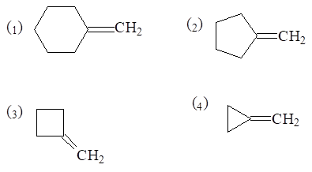
37. 2 分 (1696)
一个含氧化合物的红外光谱图在3600～3200cm-1有吸收峰, 下列化合物最可能
的是 ( )
(1) CH3－CHO (2) CH3－CO-CH3
(3) CH3－CHOH-CH3 (4) CH3－O-CH2-CH3
38. 2 分 (1697)
某化合物的红外光谱在3040－3010cm-1和1670－1620cm-1处有吸收带, 该化合物
可能是 ( )
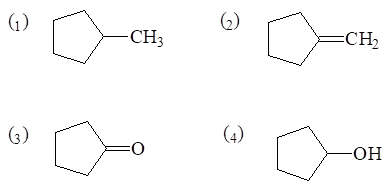
39. 2 分 (1698)
红外光谱法, 试样状态可以是 ( )
(1) 气体状态 (2) 固体状态
(3) 固体, 液体状态 (4) 气体, 液体, 固体状态都可以
40. 2 分 (1699)
用红外吸收光谱法测定有机物结构时, 试样应该是 ( )
(1) 单质 (2) 纯物质
(3) 混合物 (4) 任何试样
41. 2 分 (1700)
试比较同一周期内下列情况的伸缩振动(不考虑费米共振与生成氢键)产生的红外吸收
峰强度最大的是 ( )
(1) C-H (2) N-H (3) O-H (4) F-H
42. 2 分 (1701)
一个有机化合物的红外光谱图上在3000cm-1附近只有2930cm-1和2702cm-1处
各有一个吸收峰, 可能的有机化合物是 ( )
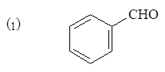
(2) CH3─CHO
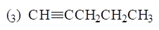
(4) CH2= CH-CHO
43. 2 分 (1702)
羰基化合物中, C=O伸缩振动频率最低者是 ( )
(1) CH3COCH3
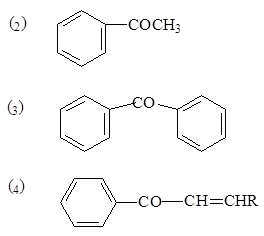
44. 2 分 (1703)
色散型红外分光光度计检测器多用 ( )
(1) 电子倍增器 (2) 光电倍增管
(3) 高真空热电偶 (4) 无线电线圈
45. 2 分 (1704)
红外光谱仪光源使用 ( )
(1) 空心阴级灯 (2) 能斯特灯
(3) 氘灯 (4) 碘钨灯
46. 2 分 (1705)
某物质能吸收红外光波, 产生红外吸收谱图, 其分子结构必然是 ( )
(1) 具有不饱和键 (2) 具有共轭体系
(3) 发生偶极矩的净变化 (4) 具有对称性
47. 3 分 (1714)
下列化合物的红外谱中σ(C=O)从低波数到高波数的顺序应为 ( )
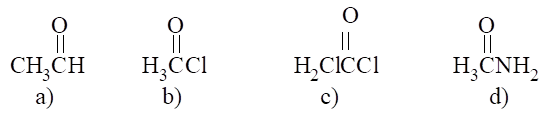
(1) a b c d (2) d a b c (3) a d b c (4) c b a d
48. 1 分 (1715)
对于含n个原子的非线性分子, 其红外谱 ( )
(1) 有3n-6个基频峰 (2) 有3n-6个吸收峰
(3) 有少于或等于3n-6个基频峰 (4) 有少于或等于3n-6个吸收峰
49. 2 分 (1725)
下列关于分子振动的红外活性的叙述中正确的是 ( )
(1)凡极性分子的各种振动都是红外活性的, 非极性分子的各种振动都不是红外活性的
(2) 极性键的伸缩和变形振动都是红外活性的
(3) 分子的偶极矩在振动时周期地变化, 即为红外活性振动
(4) 分子的偶极矩的大小在振动时周期地变化, 必为红外活性振动, 反之则不是
50. 2 分 (1790)
某一化合物以水或乙醇作溶剂, 在UV光区204nm处有一弱吸收带, 在红外光谱的官能 团区有如下吸收峰: 3300~2500cm-1(宽而强); 1710cm-1, 则该化合物可能是 ( )
(1) 醛 (2) 酮 (3) 羧酸 (4) 酯
51. 3 分 (1791)
某一化合物以水作溶剂, 在UV光区214nm处有一弱吸收带, 在红外光谱的官能团区有如下 吸收峰: 3540~3480cm-1和3420~3380cm-1双峰;1690cm-1强吸收。则该化合物可能 是 ( )
(1) 羧酸 (2) 伯酰胺 (3) 仲酰胺 (4) 醛
52. 2 分 (1792)
某一化合物在UV光区270nm处有一弱吸收带, 在红外光谱的官能团区有如下吸收峰: 2700~2900cm-1 双峰;1725cm-1。则该化合物可能是 ( )
(1) 醛 (2) 酮 (3) 羧酸 (4) 酯
53. 2 分 (1793)
今欲用红外光谱区别HO[CH2-CH2-O]1500H和HO[CH2-CH2-O]2000H,下述的哪一种说法 是正确的?
( )
(1) 用n OH 3400~3000cm-1宽峰的波数范围区别
(2) 用n CH<3000cm-1强度区别
(3) 用n CO1150~1070cm-1强度区别
(4) 以上说法均不正确
54. 2 分 (1794)
某一化合物在紫外吸收光谱上未见吸收峰, 在红外光谱的官能团区出现如下吸收 峰: 3000cm-1左右,1650cm-1左右, 则该化合物可能是 ( )
(1) 芳香族化合物 (2) 烯烃 (3) 醇 (4) 酮
55. 2 分 (1795)
某一化合物在UV光区无吸收,在红外光谱的官能团区出现如下吸收峰: 3400~3200cm-1 (宽而强),1410cm-1，则该化合物最可能是 ( )
(1) 羧酸 (2) 伯胺 (3) 醇 (4) 醚
56. 1 分 (1796)
如果C-H键和C-D键的力常数相同, 则C-H键的振动频率n C-H与C-D健的振动频率 n C-D相比是 ( )
(1) n C-H>n C-D (2) n C-H<n C-D
(3) n C-H=n C-D (4) 不一定谁大谁小
57. 1 分 (1797)
若O-H键的力常数是5.0N/cm, 则该键的振动频率是(mO-H=1.5×10-24g) ( )
(1) 4.6 ×1013HZ (2) 9.2 ×1013HZ
(3)13.8×1013HZ (4) 2.3 ×1013HZ
58. 1 分 (1798)
若C=C键的力常数是1.0×10N/cm, 则该键的振动频率是(mC=C=1.0×10-23g) ( )
(1)10.2×1013HZ (2) 7.7×1013HZ
(3) 5.1×1013HZ (4) 2.6×1013HZ
59. 1 分 (1799)
两弹簧A、B, 其力常数均为K=4.0×10-5N/cm, 都和一个1.0g的球连接并处于振动状 态。弹簧A球的最大位移距离是+1.0cm, 弹簧B球的最大位移距离是+ 2.0cm。二者的振动频率 ( )
(1) A＞B (2) B＞A (3) A＝B (4) A≠B
60. 1 分 (1800)
一个弹簧(K=4.0×10-5 N/cm)连着一个1.0g的球并处于振动状态, 其振动频率为( )
（1）(1/p)Hz （2）(2/p )Hz
（3）(1/2p )Hz （4）(2/3p )Hz
61. 1 分 (1801)
当弹簧的力常数增加一倍时,其振动频率 ( )
(1) 增加 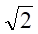
(3) 增加0.41倍 (4) 增加1倍
二、填空题 ( 共59题 )
1. 2 分 (2004)
试比较 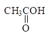 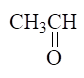
比乙醛中的羰基____________。
2. 2 分 (2011)
当一定频率的红外光照射分子时，应满足的条件是 ____________________________
和 _______________________________________________ 才能产生分子的红外吸收峰。
3. 2 分 (2051)
分子对红外辐射产生吸收要满足的条件是
(1) _______________________________________；
(2) _______________________________________。
4. 2 分 (2055)
理论上红外光谱的基频吸收峰频率可以计算, 其算式为__________________________。
5. 2 分 (2083)
分子伸缩振动的红外吸收带比_____________的红外吸收带在更高波数位置.
6. 2 分 (2091)
当浓度增加时,苯酚中的OH 基伸缩振动吸收峰将向________________方向位移.
7. 2 分 (2093)
如下两个化合物的双键的伸缩振动频率高的为_______. (a) =N-N=, ( b)-N=N- .
8. 2 分 (2105)
水为非线性分子, 应有________________个振动形式.
9. 5 分 (2473)
化合物 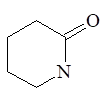
(1)3500～3100 cm-1处, 有 ___________________ 振动吸收峰；
(2)3000～2700 cm-1处, 有 ___________________ 振动吸收峰；
(3)1900～1650 cm-1处, 有 ___________________ 振动吸收峰；
(4)1475～1300 cm-1处, 有 ___________________ 振动吸收峰。
10. 2 分 (2475)
红外光谱图上吸收峰数目有时比计算出的基本振动数目多, 原因是
�覃覃覃覃覃覃覃覃覃覃覃覃覃覃覃覃�。
11. 2 分 (2477)
CO2分子基本振动数目为______________个, 红外光谱图上有______个吸收谱带, 强度最大的谱带由于___________________振动引起的.
12. 5 分 (2478)
傅里叶变换红外分光光度计由以下几部分组成:
___________________________、________________________
___________________________、________________________
___________________________和________________________.
13. 5 分 (2479)
在苯的红外吸收光谱图中
(1) 3300～3000cm-1处, 由________________________振动引起的吸收峰；
(2) 1675～1400cm-1处, 由________________________振动引起的吸收峰；
(3) 1000～650cm-1处, 由 振动引起的吸收峰。
14. 5 分 (2480)
化合物C5H8不饱和度是__________________________, 红外光谱图中
(1) 3300～3000cm-1有吸收谱带, 由______________________振动引起的；
(2) 3000～2700cm-1有吸收谱带, 由______________________振动引起的；
(3) 2133cm-1有吸收谱带, 由___________________________振动引起的；
(4) 1460 cm-1与1380cm-1有吸收谱带, 由_____________________振动引起的；
(5) 该化合物结构式是_ __________________________。
15. 2 分 (2481)
有下列化合物:
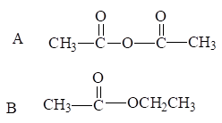
其红外光谱图上C=O伸缩振动引起的吸收峰不同是因为
A ______________________________；
B ______________________________。
16. 5 分 (2482)
中红外分光光度计基本部件有______________________、___________________、
_____________________、____________________ 和______________________。
17. 5 分 (2483)
红外分光光度计中, 红外光源元件多用______________________________, 单色器
中色散元件采用________________________________, 液体试样吸收池的透光面多采
用_____________________________________材料,检测器为______________________
_____ 。.
18. 2 分 (2484)
中红外分光光度计多采用_______________个光束在光栅分光后, 还加有滤光片,
其目的是________________________________________________。
19. 2 分 (2485)
红外光谱法的固体试样的制备常采用__________________________________、
______________________________和__________________________________ 等法
20. 2 分 (2486)
红外光谱法的液体试样的制备常采用___________________________________、
_______________________________等法。
21. 2 分 (2487)
红外光谱区的波长范围是_____________________________________________；
中红外光谱法应用的波长范围是_____________________________________。
22. 5 分 (2529)
用488.0nm波长的激光照射一化合物, 观察到529.4nm和452.7nm的一对拉曼线. 前者是__________线, 强度较_____; 后者是__________线, 强度较______. 计算的拉曼位移是____________cm-1.
23. 4 分 (2532)
在烯烃的红外谱中, 单取代烯RCH=CH2的n(C=C)约1640cm-1. 二取代烯RCH=CHR(顺式)在1635～1665cm-1有吸收, 但RCH=CHR(反式)在同一范围观察不到n(C=C)的峰,这是因为_________________________________________________________________.共轭双烯在1600cm-1(较强)和1650cm-1(较弱)有两个吸收峰, 这是由______________引起的, 1650cm-1的峰是_______________峰. 预期RCH=CHF的n(C=C)较单取代烯烃波数较______、强度较______, 这是因为_______________________所致.
24. 4 分 (2533)
在下列顺式和反式结构的振动模式中, 红外活性的振动是_____________________,
拉曼活性的振动是________________________________.
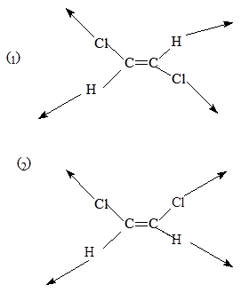 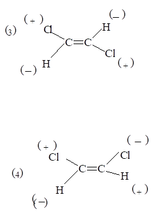
25. 4 分 (2534)
下面是反式1,2-二氯乙烯的几种简正振动模式, 其中具有红外活性的振动是______
_______________, 具有拉曼活性的振动是________________________________.
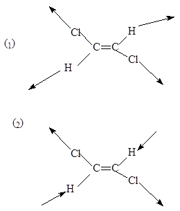 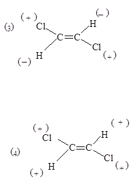
26. 2 分 (2535)
HCN是线型分子, 共有______种简正振动方式, 它的气相红外谱中可以观察到____个
红外基峰.
27. 2 分 (2536)
下列化合物的红外谱中n(C=O)从高频到低频的顺序是_______________________.
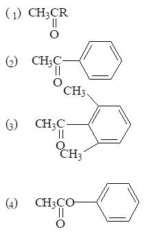
(提示: 考虑立体位阻)
28. 2 分 (2673)
指出下列化合物在红外光谱中n c=o的顺序(从大到小)
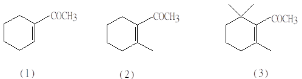
____________________________________________________________。
29. 2 分 (2674)
指出下列化合物在红外光谱中νc=o的顺序(从大到小)
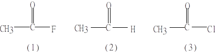
______________________________________________________________。
30. 5 分 (2675)
乳化剂OP-10的化学名称为:烷基酚聚氧乙烯醚,
化学式: 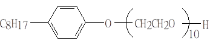
IR谱图中标记峰的归属:a_____________________, b_______________________,
c_____________________________, d________________________。
31. 2 分 (2676)
在红外光谱法中, 适用于水体系研究的池窗材料通常有___________________和 _____________________, 若要研究的光谱范围在4000cm-1~500cm-1区间, 则应采用 _____________________作为池窗材料。
32. 2 分 (2677)
一个弹簧和一个球连接并处于振动状态, 当弹簧的力常数增加一倍时, 其振动频率比原 频率增加__________; 当球的质量增加一倍时, 其振动频率比原频率__________。
33. 2 分 (2678)
把能量加到一个振动的弹簧体系上, 其频率_______, 随着势能增加, 位移_____。
34. 2 分 (2679)
把能量加到一个正在振动的弹簧体系上, 该弹簧的振动频率____________, 原因是
____________________________________________。
35. 5 分 (2680)
化合物CH3COOCH2C≡CH
在3300~3250cm-1的吸收对应______________________________________;
在3000~2700cm-1的吸收对应______________________________________;
在2400~2100cm-1的吸收对应______________________________________;
在1900~1650cm-1的吸收对应______________________________________。
36. 2 分 (2681)
碳 -碳键的伸缩振动引起下列波长范围的吸收: 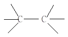
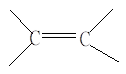
的关系为_______________, 所以按键力常数增加的顺序排列上述三个键为_____________________________。
37. 2 分 (2682)
在某些分子中, 诱导效应和共轭效应使吸收带的频率发生位移。当诱导效应使化学键的 键能增加时, 则吸收带频率移向_________, 反之, 移向_____________。当共轭效应使 电子云密度平均化时, 则使双键频率移向_________, 而单键频率略向__________。
38. 2 分 (2683)
水分子的振动自由度共有____________, 预计水分子的红外光谱有________________ 吸收带, 这些吸收带所对应的振动方式是________________________________。
39. 2 分 (2684)
氢键的形成使分子中的X-H键的振动频率发生改变, 对于___________振动, 氢键的 形成使X-H键的频率移向___________; 而对于__________振动, 形成氢键使其频率移 向___________。
40. 2 分 (2685)
某些频率不随分子构型变化而出现较大的改变, 这些频率称为___________________, 它们用作鉴别____________________, 其频率位于_______________________cm-1 之间。
41. 2 分 (2686)
指纹区光谱位于__________与______________cm-1 之间, 利用此光谱可识别一些 ______。
42. 2 分 (2687)
如果C-H键的力常数是5.0N/cm, 碳和氢原子的质量分别为20×10－24g 和1.6×10-24g, 那么, C-H的振动频率是__________Hz, C-H基频吸收带的波长是 ________mm, 波数是______________cm-1。
43. 2 分 (2688)
若分子A-B的力常数为kA-B, 折合质量为mA-B, 则该分子的振动频率为___________， 分子两振动能级跃迁时吸收的光的波长为_______________________________。
44. 5 分 (2689)
化合物 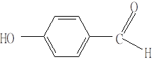
在3750~3000cm-1的吸收对应_______________________
在3000~2700cm-1的吸收对应_________________________;
在1900~1650cm-1的吸收对应_________________________;
在1600~1450cm-1的吸收对应_______________。
45. 2 分 (2690)
分子的简正振动分为__________________和________________________。
46. 2 分 (2691)
分子伸缩振动是指______________________________________________________, 该振动又分为_________________________和_________________________。
47. 2 分 (2692)
分子的弯曲振动(又称变形振动或变角振动)是指_______________________________
____________________________________。该振动又包括__________________,
______________, ___________________及____________________。
48. 5 分 (2693)
在分子的红外光谱实验中, 并非每一种振动都能产生一种红外吸收带, 常常是实际吸收
带比预期的要少得多。其原因是(1)_________________________________________;
(2)_________________________________________________________;
(3)_________________________________________________________;
(4)_________________________________________________________。
49. 2 分 (2694)
分子的振动显示红外活性是指___________________________________________;
分子的振动显示拉曼活性是指___________________________________________。
50. 2 分 (2695)
在常规的色散型光谱法中, 直接记录的是__________________________; 即吸收强度 是________的函数; 在傅里叶变换光谱法中, 直接记录的是________________; 即强 度是__________的函数。
51. 2 分 (2696)
两个连续振动能级之间的能量差DE振是_______; 当力常数增加时, DE振 _________, 能极之间的距离_______________。
52. 2 分 (2697)
分子CH3CH2CHO在3000~2700cm-1的吸收带是由__________________________;
在1900~1650cm-1吸收带是由____________________________________________;
在1475~1300cm-1吸收带是由_________________________________________。
53. 2 分 (2698)
红外光谱法主要研究在分子的转动和振动中伴随有____________变化的化合物, 因此, 除了___________和______________等外, 几乎所有的化合物在红外光区均有吸收。
54. 2 分 (2699)
红外光区在可见光区和微波光区之间, 习惯上又将其分为三个区:________________, _________________和_______________。其中, _________________的应用最广。
55. 2 分 (2700)
一般将多原子分子的振动类型分为______________振动和________________振动, 前者又可分为________________振动和_______________振动; 后者可分为 ____________,_____________, ___________和____________。
56. 2 分 (2701)
基团O-H和N-H, ≡C-H和=C-H, C≡C和C≡N的伸缩振动频率分别出现在
__________cm-1 , ____________cm-1和______________cm-1范围。
57. 2 分 (2702)
振动耦合是指当两个化学键振动的频率__________或_________并具有一个 ____________时, 由于一个键的振动通过__________使另一个键的长度发生改变, 产生一个微扰, 从而形成强烈的振动相互作用。
58. 2 分 (2703)
当弱的倍频(或组合频)峰位于某强的基频峰附近时, 它们的吸收峰强度常常随之_________或发生谱峰_____________, 这种倍频(或组合频)与基频之间的______________称为费米共振。
59. 2 分 (2704)
某化合物能溶于乙腈, 也能溶于庚烷中, 且两种溶剂在测定该化合物的红外光谱区间 都有适当的透过区间, 则选用__________溶剂较好,因为____________。
三、计算题 ( 共15题 )
1. 5 分 (3084)
已知醇分子中 O－H 伸缩振动峰位于 2.77mm，试计算 O－H 伸缩振动的力常数。
2. 5 分 (3094)
在 CH3CN 中 C≡N 键的力常数 k= 1.75×103 N／m，光速c= 2.998×1010 cm/s，当发生红外吸收时，其吸收带的频率是多少？(以波数表示)
阿伏加德罗常数为 6.022×1023mol-1，Ar(C) = 12.0，Ar(N) = 14.0)
3. 5 分 (3120)
在烷烃中 C－C、C＝C、C≡C 各自伸缩振动吸收谱带范围如下，请以它们的最高
值为例，计算一下单键、双键、三键力常数 k 之比。
C－C 1200～800 cm-1
C＝C 1667～1640 cm-1
C≡C 2660～2100 cm-1
4. 5 分 (3136)
计算分子式为 C8H10O3S 的不饱和度。
5. 5 分 (3137)
HF 的红外光谱在 4000cm-1 处显示其伸缩振动吸收。试计算 HF 键的力常数以及 3HF吸收峰的波长 (mm) 。 Ar(H) = 1.008，Ar(F) = 19.00 。
6. 10 分 (3138)
计算甲醛中的 C＝O 键 (k= 1.23×103N/m) 和苯中的 C－C 键 (k= 7.6×102N/m) 在红外吸收光谱中所产生吸收峰的近似波数和波长.
7. 5 分 (3145)
CO的红外光谱在2170cm-1处有一振动吸收峰, 试计算：
(1) CO键的力常数为多少?
(2) 14C的对应吸收峰应在多少波数处发生?
8. 5 分 (3368)
计算乙酰氯中C=O和C-Cl键伸缩振动的基本振动频率(波数)各是多少? 已知化学键力常数分别为12.1 N/cm.和3.4N/cm.。
9. 5 分 (3369)
烃类化合物中C-H的伸缩振动数据如下：
烷烃： 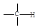
键力常数/(N/cm) 4.7 5.1 5.9
求烷、烯、炔烃中C-H伸缩振动吸收峰的近似波数.
10. 2分（3370）
某胺分子NH伸缩振动吸收峰位于2.90mm, 求其键力常数. Ar(N)=14.
11. 5 分 (3371)
在烷烃中C-C, C=C, 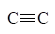 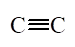
12. 5 分 (3372)
C-O与C=O伸缩振动吸收, 二者键力常数之比k(C-O):k(C=O) =1:2.42, C-O在8.966mm处有吸收峰, 问C=O吸收峰的波数是多少?
13. 10 分 (3405)
用435.8nm的汞线作拉曼光源, 观察到444.7nm的一条拉曼线. 计算：
(1) 拉曼位移Dn (cm-1)
(2) 反Stokes线的波长(nm)。
14. 2 分 (3536)
如果C＝O键的力常数是1.0×10N/cm，mC＝O＝1.2×10-23g，计算C＝O振动基频吸收带的波长和波数。
15. 5 分 (3537)
在环戊酮分子中，由于 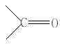 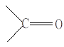
四、问答题 ( 共 58题 )
1. 5 分 (2474)
已知下列单键伸缩振动中
C-C C-N C-O
键力常数 k/(N/cm) 4.5 5.8 5.0
吸收峰波长 l/mm 6 6.46 6.85
请写出三者键振动能级之差DE的顺序, 并解释理由.
2. 5 分 (2476)
请画出亚甲基的基本振动形式。
3. 10 分 (4005)
N2O 气体的红外光谱有三个强吸收峰,分别位于 2224 cm-1 (4.50mm ), 1285 cm-1 (7.78mm ) 和 579 cm-1 (17.27mm ) 处。此外尚有一系列弱峰，其中的两 个弱峰位于2563 cm-1 (3.90mm ) 和 2798 cm-1 (3.57mm ) 处。已知 N2O 分子具有线性结构。
(1) 试写出 N2O 分子的结构式，简要说明理由
(2) 试问上述五个红外吸收峰各由何种振动引起？
4. 5 分 (4013)
实际观察到的红外吸收峰数目与按 3n-5 或 3 n -6 规则算得的正常振动模式数目常
不一致，前者往往少一些，也可能多一些，这是什么原因？
5. 5 分 (4014)
某气体试样的红外光谱在 2143 cm-1 (4.67mm) 处有一强吸收峰，在 4260 cm-1 (2.35mm ) 处有一弱吸收峰。经测定，知其摩尔质量为 28g/mol，因而该气体可能是 CO 或 N2，也可能是这两种气体的混合物。试说明这两个红外吸收峰由何种振动引起。
6. 5 分 (4020)
指出下列化合物预期的红外吸收。
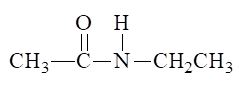
7. 5 分 (4027)
现有一未知化合物，可能是酮、醛、酸、酯、酸酐、酰胺。试设计一简单方法鉴别之。
8. 10 分 (4041)
下图是化学式为C8H8O的IR光谱, 试由光谱判断其结构。
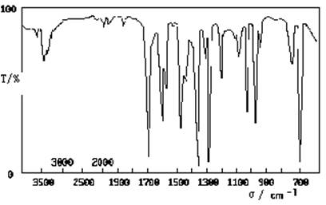
9. 5 分 (4049)
某化合物的红外谱图如下。试推测该化合物是否含有羰基 (C＝O)，苯环及双键
(＝C＝C＝)？为什么？
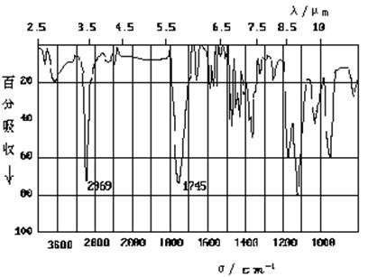
10. 5 分 (4051)
下图是某化合物的 IR 光谱图，试问该化合物是芳香族还是脂肪族？（如图）
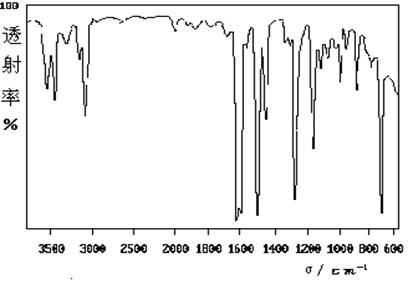
11. 5 分 (4052)
下列 (a)、(b) 两个化合物中，为什么 (a) 的 nC=O低于 (b) ？
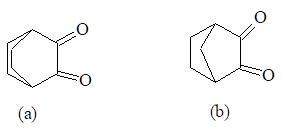
nC=O 为1731 cm-1 nC=O 为1760 cm-1
1761 cm-1 1776 cm-1
12. 5 分 (4053)
有一化学式为 C6H10 的化合物，其红外光谱图如下，试推测它的结构并列出简单说明 ?
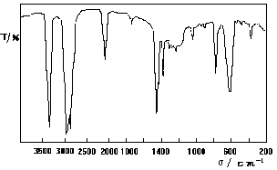
13. 5 分 (4055)
有一从杏仁中离析出的化合物，测得它的化学式为 C7H6O，其红外光谱图如下，试推测它的结构并简要说明之。
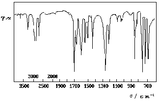
14. 5 分 (4056)
某化合物其红外光谱图如下，试推测该化合物是： 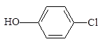 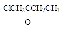
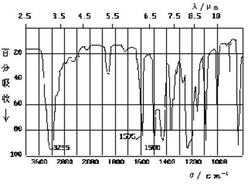
15. 5 分 (4057)
在 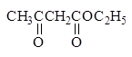
在 1650 cm-1 和 3000 cm-1 也出现了吸收峰，试解释出现后两个吸收峰的主要原因。
16. 5 分 (4076)
指出下面化合物光谱中可能的吸收，该光谱是由纯试样 (也就是无溶剂存在) 得到的：
CH3- CH2- OH
17. 5 分 (4124)
HCl 的振动吸收发生于 2886 cm-1 处，对于 DCl 相应的峰在什么波长?(Cl 的相对原
子质量Ar(Cl) =35.5)
18. 5 分 (4125)
预计下图中化合物伸缩振动产生的吸收带处在光谱中的哪一个区域？
19. 5 分 (4143)
有一经验式为 C3H6O 的液体，其红外光谱图如下，试分析可能是哪种结构的化合物。

20. 5 分 (4149)
CH2= CH2分子有如下振动，指出哪些振动有活性，哪些没有活性。
(1) C - H 伸缩 (2) C - H 伸缩
(3) CH2摇摆 （4）CH2扭动
21. 5 分 (4153)
有一经验式为 C12H11N 的白色结晶物，用 CCl4和 CS2作溶剂，得到的红外光谱如下，试鉴定该化合物。
22. 5 分 (4384)
红外吸收光谱是怎样产生的?
23. 5 分 (4387)
傅里叶变换红外光谱仪由哪几部分组成?
24. 5 分 (4388)
化合物C3H6O2其红外光谱图的主要吸收峰如下:
(1) 3000cm-1～2500cm-1处有宽峰
(2) 2960cm-1～2850cm-1处有吸收峰
(3) 1740cm-1～1700cm-1处有吸收峰
(4) 1475cm-1～1300cm-1处有吸收峰
请写出它的结构式并分析原因.
25. 5 分 (4389)
某化合物为C6H`-14!`, 在红外光谱中观测到的吸收峰有:
饱和的C-H伸缩振动在2960和2870cm-1, 甲基、亚甲基C-H弯曲振动在1461cm-1, 末端甲基C-H弯曲振动在1380cm-1 , 乙基的弯曲振动在775cm-1。请推断此化合物的结构.
26. 5 分 (4390)
下列化合物红外吸收光谱有何不同?
27. 5 分 (4391)
下列化合物红外吸收光谱有何不同?
28. 5 分 (4392)
请写出1-己烯C6H`-12!`的红外吸收光谱, 它有哪些吸收峰? 并说明引起吸收的键及振动形式.
29. 5 分 (4393)
简单说明下列化合物的红外吸收光谱有何不同?
A. CH3-COO-CO-CH3
B. CH3-COO-CH3
C. CH3-CO-N(CH3)2
30. 5 分 (4394)
红外吸收光谱中下列化合物光谱有何不同?
31. 5 分 (4395)
乙醇在CCl4中, 随着乙醇浓度的增加, OH伸缩振动在红外吸收光谱图上有何变化? 为什么?
32. 5 分 (4396)
邻硝基苯酚 在1.0mol/L溶液与0.5mol/L溶液中OH伸缩振动频率发生什么变化? 为什么?
33. 5 分 (4397)
有一种晶体物质, 红外光谱图上可能是下述两种物质中的哪一种? 为什么?
红外光谱图上: 3330cm-1, 1600cm-1, 2960 cm-1与2870cm-1有吸收峰可能是
(1) NC-NH+-CH-CH2OH
(2) HN=CH-NH-CO-CH2-CH3
34. 5 分 (4398)
试比较下列各组红外吸收峰的强度, 并说明原因。
(1) C=O与C=C的伸缩振动
(2) 与 的C=C伸缩振动
35. 5 分 (4399)
试比较下列各组内红外吸收峰的强度, 并说明原因
(1) 同一化学键的伸缩振动与变形振动
(2) 同一化学键的对称伸缩振动与反对称伸缩振动
(3) 基频峰与倍频峰
36. 10 分 (4469)
根据下列IR及NMR谱, 推测化合物结构
37. 10 分 (4470)
从下列数据推测该化合物的结构, 该化合物IR谱约在3400cm-1附近有一个强吸收带, MS谱在m/z 136, 118, 107, 79, 77, 51及39处有峰值, NMR谱数据为:
d/ppm 信号类型 质子数
0.8 三重峰 3
1.6 宽的四重峰 2
3.9 宽的单峰 1
4.3 宽的三重峰 1
7.2 宽的单峰 5
38. 5 分 (4471)
分子式为C6H12O2
NMR谱: d/ppm 相对强度比 信号类型
1.2 6 单峰
2.2 3 单峰
2.6 2 单峰
4.0 1 单峰
IR谱: 在1700cm-1及3400cm-1处存在吸收带, 请推测该化合物结构.
39. 5 分 (4472)
活性化合物C8H10O显示宽的IR谱带, 中心吸收在3300cm-1处, 这个化合物的NMR谱的d/ppm数据为:
7.18(5H) 宽的单峰 , 4.65(1H) 四重峰,
2.76(1H) 单峰, 1.32(3H) 二重峰
试推测该化合物的结构.
40. 5 分 (4473)
写出符合下列波谱数据的化合物结构.
C8H14O4 NMR IR
三重峰 d=1.2 6H
单峰 d=2.5 4H 1740cm-1
四重峰 d=4.1 4H
41. 5 分 (4474)
写出符合下列波谱数据的化合物结构.
C10H12O2 NMR IR
三重峰 d=1.2 3H
四重峰 d=4.1 2H 1740cm-1
单峰 d=3.5 2H
多重峰 d=7.3 5H
42. 5 分 (4477)
化合物A的相对分子质量为100, 与NaBH4作用后得B, 相对分子质量为102. B的蒸气通过高温Al2O3可得C, 相对分子质量为84. C可臭氧化分解后得D和E. D能发生碘仿反应而E不能. 试根据以上化学反应和A的如下图谱数据, 推测A的结构.
A的 IR: 1712cm-1, 1383cm-1, 1376cm-1
NMR: d 1.00 1.13 2.13 3.52
峰型: 三 双 四 多
峰面积: 7.1 13.9 4.5 2.3
43. 4 分 (4478)
定性地指出1,3-丁二烯和1-丁烯的红外光谱的二个主要区别.
44. 4 分 (4479)
用红外光谱鉴别下列化合物, 指出什么特征鉴别以及其理由.
(1) 顺-2-丁烯
(2) 反-2-丁烯
(3) 2-氯-2-丁烯
45. 5 分 (4614)
试说明(CH3)2C=C(CH3)2在红外光谱的官能团区有哪些吸收峰?
46. 5 分 (4615)
今欲测定某一微细粉末的红外光谱, 应选用何种制样方法?为什么?
47. 5 分 (4616)
试预测丙二酸 和戊二酸 在官能团区的吸收有何不同? 为什么?
48. 5 分 (4617)
试指出CH3CH2CH2CHO在红外光谱官能团区有哪些特征吸收？
49. 2 分 (4618)
能采用红外光谱区别下列物质对吗?为什么?
50. 5 分 (4619)
试预测CH3CH2C≡CH在红外光谱官能团区的特征吸收。
51. 5 分 (4620)
试预测CH3CH2COOH在红外光谱官能团区有哪些特征吸收？
52. 5 分 (4621)
下列化合物在红外光谱官能团区有何不同?指纹区呢?
53. 5 分 (4622)
甲苯甲腈() 的IR谱如下, 指出标有波数的吸收峰的归属。
54. 5 分 (4623)
下图为乙酸烯丙酯(CH2=CH-CH2-O-CO-CH3)的IR谱, 指出标有波数的吸收峰的
归属。
55. 5 分 (4624)
已知一化合物的分子式为C10H10O2, 其IR谱在1685cm-1和3360cm-1等处有吸收, 可能有如下三种结构:
判断哪个结构不符合IR谱, 为什么?
56. 5 分 (4625)
某化合物的分子式为C5H3NO2, 其IR谱在1725,2210cm-1和2280cm-1处有吸收峰, 推测该化合物最可能的结构。
57. 10 分 (4626)
下列的IR谱表示一分子式为C8H9NO2的化合物, 该分子式可能有如下五种结构, 问IR谱 表示的是哪一种?为什么?
58. 5 分 (4627)
某化合物的IR谱如下, 它的分子式为C10H10O, 根据IR谱推断其结构并说明理由。